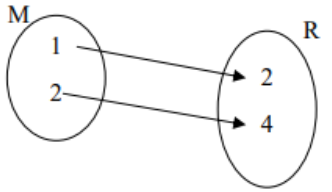

Elektronická učebnica matematiky
Elektronická učebnica matematiky
-
Funkcie
-
Kombinatorika
-
Pravdepodobnosť
-
Štatistika

Funkcie
- Funkcia je matematický vzťah medzi dvoma množinami, kde každému prvku prvej množiny je priradený práve jeden prvok druhej množiny
- Opisuje vzťahy a interakcie medzi číslami a umožňuje matematickú analýzu
Závislá premenná
- javy, ktoré od seba navzájom súvisia
- vieme určiť, ktorý jav je závislí od druhého (výška stromu + veľkosť jeho tieňa, váha dieťata + jeho vek)
Nezávislá premenná
- Javy, ktoré od seba navzájom nesúvisia
- Nejde o funkciu
- Môže byť daná:
- predpisom (y = 2x + 4)
- tabuľkou (usporiadané dvojice) (f = {[1, 2],[2, 4],[3, 6]})
- grafom
- šípkový diagram

Funkcia
- ak medzi dvoma veličinami x a y existuje závislosť, ktorá každej hodnote x priradí práve jednu hodnotu y, hovoríme o funkčnej závislosti vo funkcii
- sú dve neprázdne mnižiny R čisel A a B, ak priradíme každému číslu x∈A podľa istého predpisu najviac jendo číslo y∈B (ktoré označíme y=f(x) a nazveme funkčná hodnota), tak množina f všetkých usporiadaných dvojíc [x; f(x)] sa nazýva reálna funkcia reálnej premennej
- zápis: f: y = f(x)
Definičný obor
- množina všetkých hodnôt premennej x (x∈A)
- označujeme: D(f) (vśetky premenné x)
Obor hodnôt
- množina tých prvkov y∈B, ku ktorej existuje aspoň jeden taký prvok x∈A, že [x, y]∈f
- označujeme: H(f) (všetky premenné y)